Introduction
At the end of this Tutorial, you will have created a video with a voiceover that covers the origins, evolution and main features of the JavaScript language.
The steps in the Tutorial are just one way to achieve this goal. There are lots of other services and options available. Feel free to use the services that generate the best result.
Your presentation will be graded according to the following rubric:
Creating your Google Notebook
Follow the steps below:
- Go to notebooklm.google.com and create a new Notebook.
- In the search box on the left, enter “JavaScript” and click the Arrow button. NotebookLM should find about 10 sources.
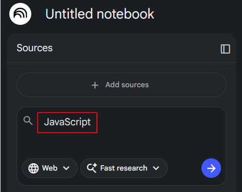
- When all the sources have been found, click the Import + button to add these sources to your Notebook.

- At the top-left of the screen, give your Notebook a name.
- Near the top-left of the screen, click + Add sources.
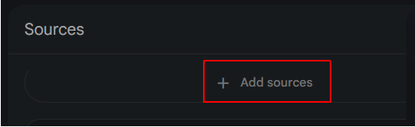
- A new input area opens up at the bottom centre of the screen. Choose the Websites option.

- Paste in the following list of URLs and click Insert.
https://www.munnelly.com/dorset/javascript/lessons/testing-weird-values
https://www.munnelly.com/dorset/javascript/lessons/generating-html
https://www.munnelly.com/dorset/javascript/lessons/modifying-html
https://www.munnelly.com/dorset/javascript/lessons/interactive-dom
https://www.munnelly.com/dorset/javascript/lessons/events
https://www.munnelly.com/dorset/javascript/lessons/fetch-json
https://www.munnelly.com/dorset/javascript/lessons/fetch-remote
After a short delay, these extra sources should appear in the list of sources on the left of the screen.
Creating your slide deck
In the Studio area at the right of the screen, choose Slide deck and then select the Presenter Slides option.
This option will generate large visuals and less text, which is perfect for the 30-second voiceovers you will add later. You want the audience to listen to you, not read a wall of text.
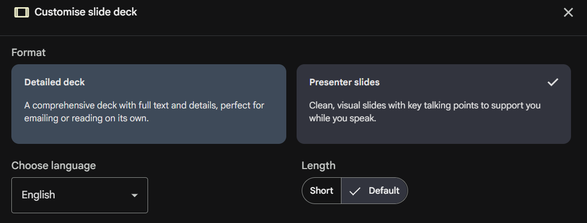
In the text box, paste the instructions below guide the AI:
Using the data sources provided, create educational slide deck of (approximately) 20 slides.
Use a 'Tech-Minimalist' style with dark themes and vibrant syntax highlighting.
Ensure each slide focuses on one core JavaScript concept. Keep text very concise (max 3 bullets per slide) to leave room for a 30-second spoken narration.
The presentation should cover the following topics:
* The origin story of JavaScript and how the language got its name.
* The further evolution of JavaScript, particularly the introduction of ES5 and ES6 features, and its impact on web development.
* How JavaScript is typically added to webpages and the role of the "defer" attribute.
* The four main variable types in JavaScript - string, numeric, boolean and null.
* Function declarations and function expressions, and the arrow function syntax.
* Conditional logic and truthy and falsy values in JavaScript.
* An overview of objects in JavaScript.
* An overview of arrays in JavaScript.
* Using an array of objects to represent a collection of data.
* JavaScript and the DOM: creating and manipulating HTML elements.
* Event handling in JavaScript, including adding event listeners and handling user interactions.
* JavaScript and JSON-format files
* Using the Fetch API with the async/await syntax to retrieve data from external sources.
Do not include NodeJS or anything about WebAssembly. Just focus on the evolution of JavaScript, its syntax and features.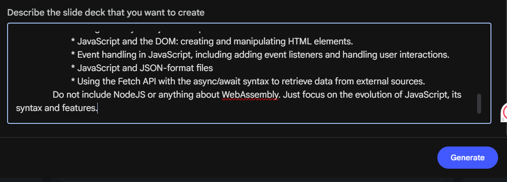
Click the Generate button to create the slide deck. This may take a while to complete.
When finished, check that your presentation includes all the above topics - and nothing else.
If you notice any missing or incorrect information, click the Pencil icon, enter your required updates, and click the Generate revised deck button.

Next, when the process is finished, follow these steps:
- Click the vertical ellipsis (three dots) in the top-right corner of the generated slide deck.
- Choose Download Powerpoint (.pptx) and save the file to your computer.
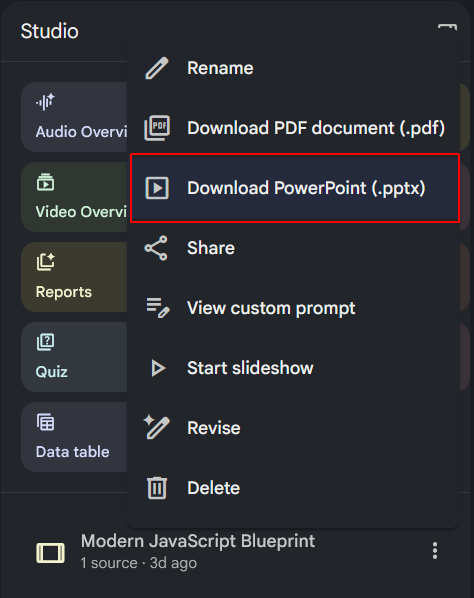
- Go to Google Drive, and upload or drag and drop the PowerPoint file into your Drive.
- Open the slide deck in Google Slides and, on the first slide, add your name, student ID and, optionally, a photograph.
- Make such changes/additions to your slide deck as you think necessary. This might include adding new slides such as dividers. The better and nicer your slides, the more marks you will get.
Your presentation should look as if you spent at least one hour on it. This may include changing the theme, and customising the fonts, colours, and background gradients, and adding images and animations.
Converting your slide deck to a video
When you are happy with your slide deck, your next task is to convert it to a video. Here are the steps:
- At the right of the Google Slides screen, click the Convert to video icon.
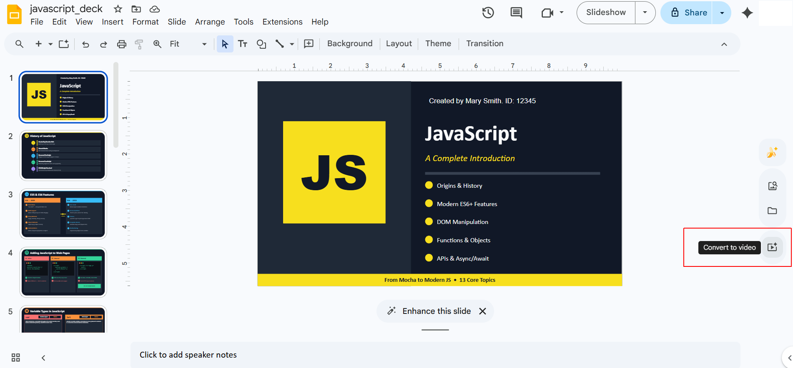
- And then click the Convert button.
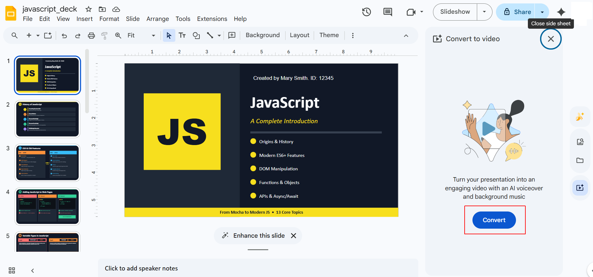
- You will now see a dialog box like that below. Deselect the Include AI voiceover, script and background music option, and click the Import button.
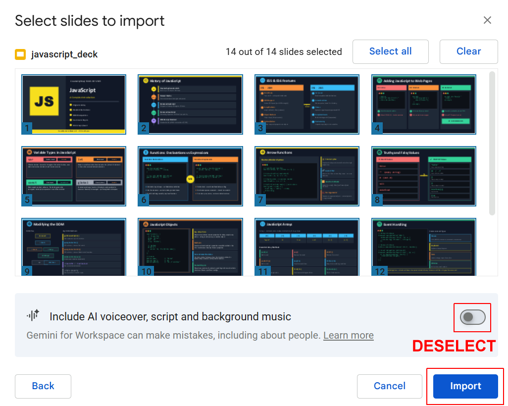
When the slide deck to video conversion is complete, Google Vids now opens in your browser tab.
Setting a default duration for your slides
Follow these steps to set a default duration for your slides:
- Once the Google Vids editor opens, look at the timeline at the bottom. By default, Google Vids gives each slide a duration of 5 seconds. This is not enough time for your narration, which should be about 60 words per slide (about 30 seconds of speaking time at a moderate pace).
- In the timeline, hover over the right edge of the first slide and drag it to the right until the timing bubble says 10. This should be about right for your title slide.
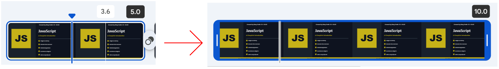
- Repeat this step for your second slide, so that it too has a duration of 10 seconds.
- Click the third slide, hold down the SHIFT key, scroll across to the right, and click on the last slide. All slides, except the first and second slides, should now be selected. You can check this by looking at the timeline - all the selected slides will have a blue border.
- Hover over the right edge of the last slide and drag it to the right until the timing bubble says 30. All slides, except the first two slides, will now be 30 seconds long.
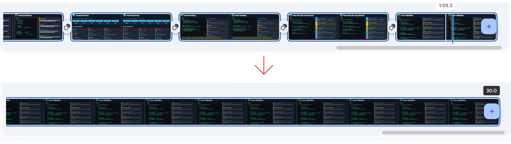
- Finally, download your video presentation as an MP4 file.
Generating the script text for the audio narration
Your next step is to generate the audio narration script. Follow these steps:
- Go to Google Gemini.
- Below the prompt box, click the + icon and upload your MP4 video file.
- In the prompt box, enter the following text.
Based on the uploaded video about JavaScript, generate a text narration script.
For the first two slides, provide a narration that is approximately 20 words long (about 10 seconds of speaking time at a moderate pace).
For the remaining slides, provide a narration that is approximately 60 words long (about 30 seconds of speaking time at a moderate pace).
Adopt a friendly and approachable tone. Ensure the narration is clear, concise, and engaging, effectively conveying the key points of each slide while maintaining a consistent flow throughout the presentation.
When finished, copy the text of the narration script and save it as a file.
Recording your voiceover files
You are now ready to record the audio narration generated in the previous step.
Follow these steps:
- In Google Drive, open your video presentation file.
- In the timeline, click your first slide to select it.
- Click the Record icon in the sidebar on the right.
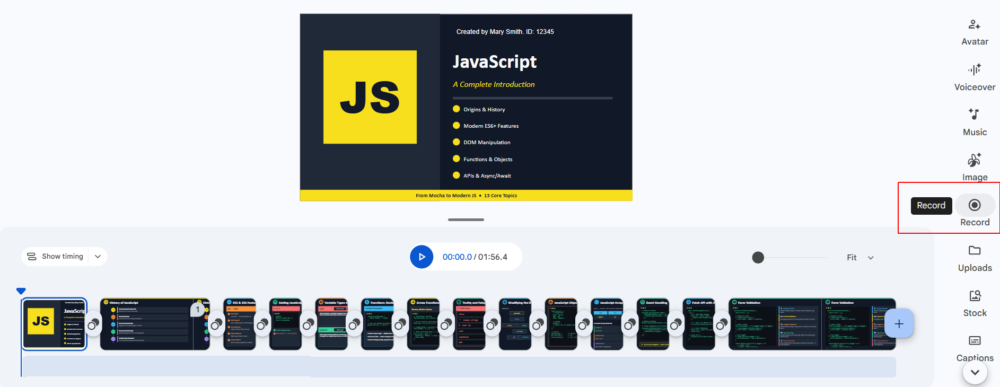
- A new sidebar opens at the right. Copy the narration text for your first slide into the text box.
- Under Recording options, click the dropdown arrow and select either Voiceover or Camera and screen.
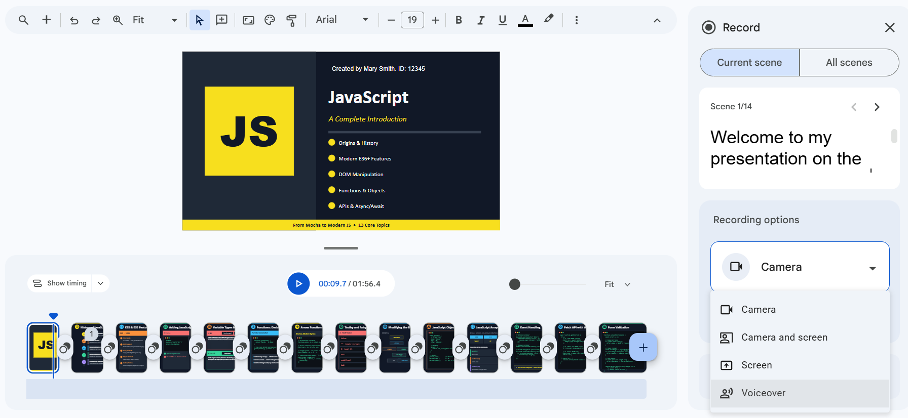
- Click the Start recording button.
Repeat the above steps for all your slides. Feel free to vary from the AI-generated script if you think you can do better.
Record in a room with lots of fabric (like a bedroom or a walk-in closet). This prevents that "echoey" or "hollow" sound. Wait two seconds after hitting "Record" before you start talking, and wait two seconds after you finish before hitting "Stop." This prevents the first and last words from getting cut off.
Play back your video with the voiceover. Edit any one of the voiceover files if necessary.
If your voiceover for any one slide is too short, there will be a small gap of silence—this is fine!
If your voiceover is too long for any one slide, extend the duration of the slide by dragging its right-hand border on the timeline.
Finally, download your video presentation as an MP4 file.